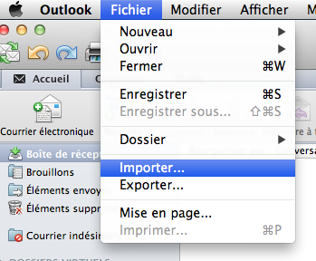
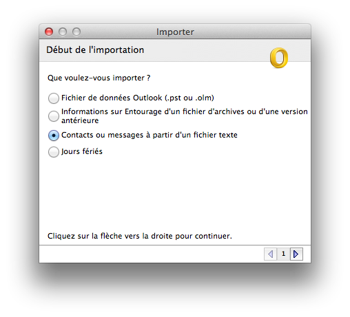
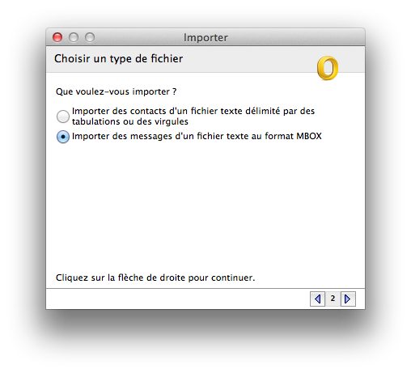
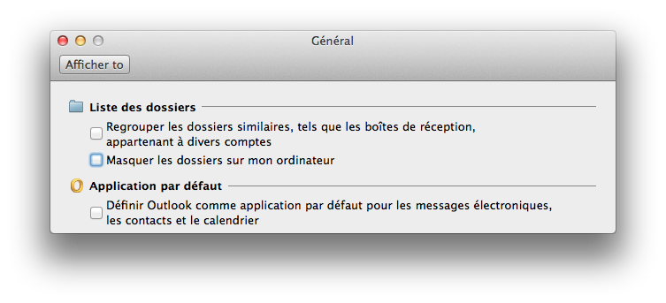

Lotus Notes exporter for Macintosh Outlook
What's happening next?
By clicking the
export
button, you will download a compressed archive of your emails.
Double-clic the downloaded .zip file to uncompress it
Open Outlook.app
Choose
File
→
Import…

Choose
Messages from a text file

Choose
Messages from a text file, MBOX format

Select one of you freshly downloaded file, and import it
Wash, rince, and repeat until you have imported all your mails. Congratulations!
Note: if you don't see your imported emails, be sure to un-check
Hide local folders on my computer
in Outlook's
General
preferences:

Powered by
iNotes exporter
© 2012–2014 Cédrik LIME